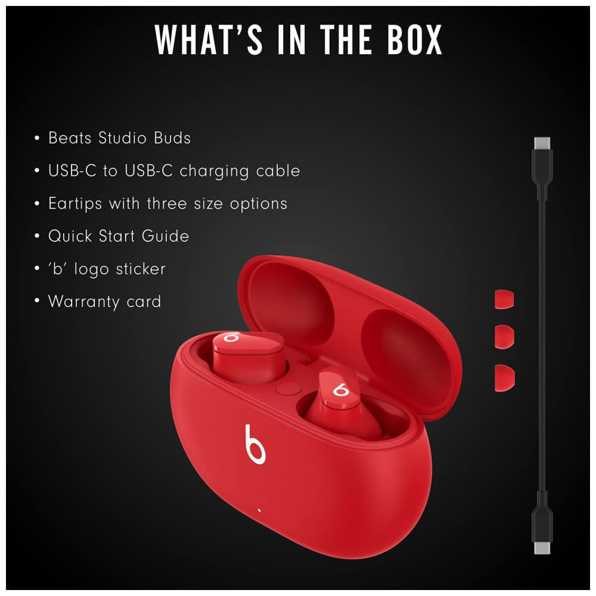
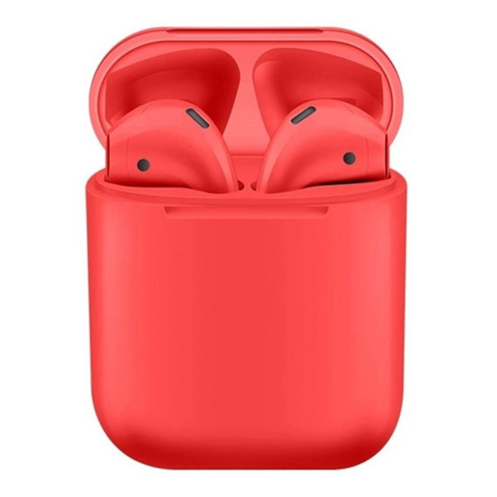
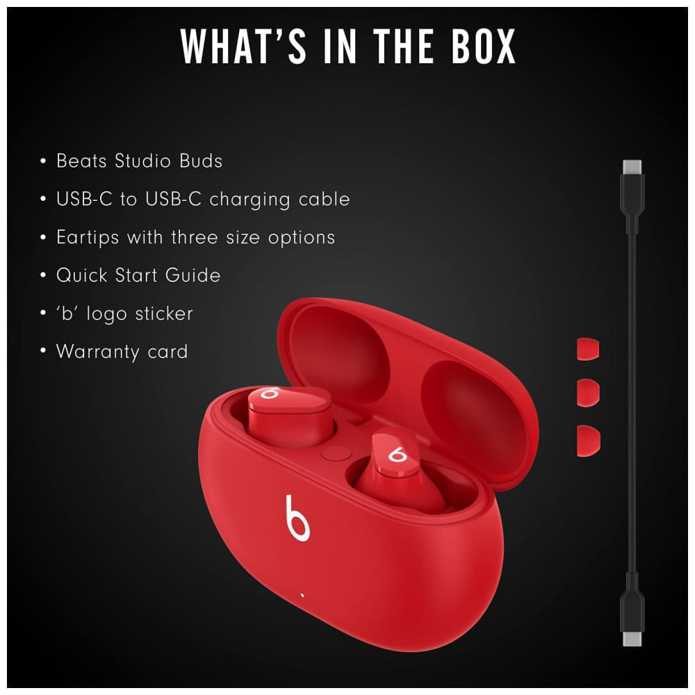
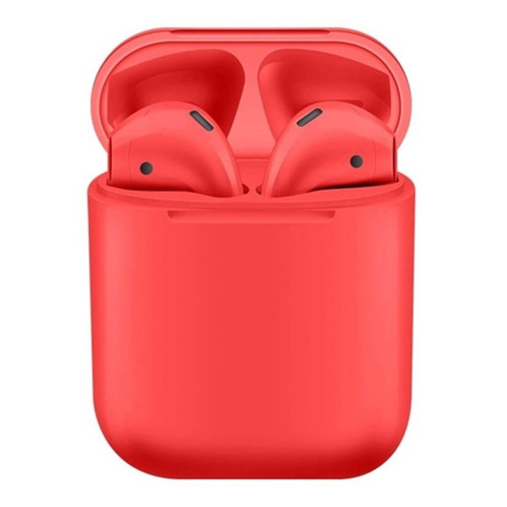

Fone Bluetooth Vermelho
O fone de ouvido Bluetooth vermelho oferece excelente qualidade de som sem fio para uma experiência auditiva imersiva. Compatível com a maioria dos dispositivos Bluetooth, ele é ideal para ouvir música, fazer chamadas e assistir a vídeos em movimento.
Principais características:
- Tipo de conexão: Bluetooth
- Cor: Vermelho
- Bateria: Autonomia de até 10 horas de reprodução contínua
- Controles: Botões integrados para reprodução de música e chamadas
- Compatibilidade: Compatível com smartphones, tablets e outros dispositivos Bluetooth
- Design: Leve e ergonômico para conforto prolongado
- Áudio: Som potente e cristalino com cancelamento de ruído passivo
- Conectividade: Alcance sem fio de até 10 metros